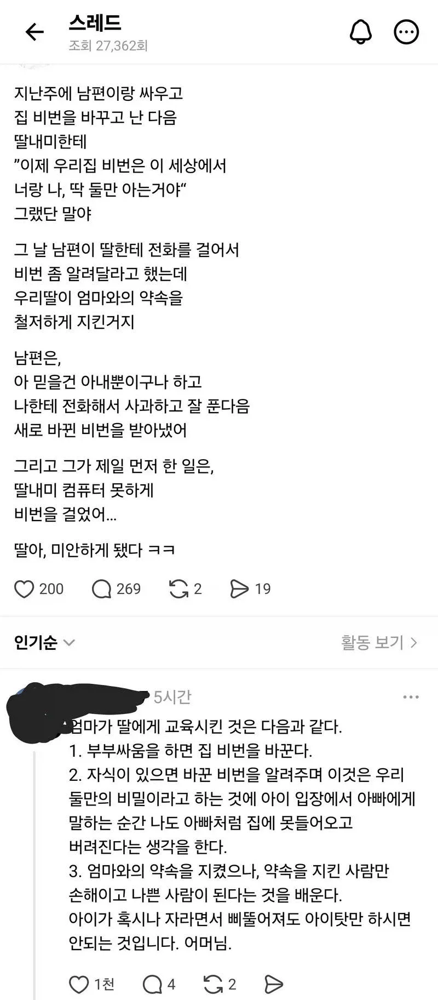

남편과 싸우고 집비번을 딸하고만 공유함
댓글
평소에 화목하고 좋은 집안인데 저런 이벤트가 어쩌다 한번 나오는거면 괜찮겠지. 근데 저게 일상적인 모습이라면 삐뚤어질 가능성이 높음. 사람 성향에 따라서 난 저렇게 이상한 부모 되지 말아야지 하고 올곧게 크는 애들도 있겠지만 그런 애들은 드물고.
이런 대화방식으로 삐뚤어질정도면 대한민국 박살 났어야지
오 그래서인가
이 사례가 한두번일까
도끼질 한번으로 나무가 쓰러질린없지
근데 저 집은 아마 많은 도끼질을 할것 같으니 나무가 넘어갈게 자명해 보이는거지
한번으론 작살안나지 근데 저걸 자랑스럽게 아무나볼수있는 공간에 올리는거에서 평소 교육이 보이는가고
엄마한테 배신감은 느끼겠지 약속 지켜달라고 해서 지켰더니 지킨 사람만 병신만들었는데
확실한건 아이 교육에는 절대적으로 안좋을거라는거고
씨발년ㅋㅋ
타세요
전부터 뭔 반응을 얻고자 올린건지 모르겠음
유쾌한 에피소드로 보이나
저 정도면 걍 재밌는 에피소드 아닌가
왜 이렇게들 화가 났지
애초에 단순히 사과하면 풀릴 일로 왜 집 비번을 바꾼건지도 이해가 안되는데
엄마 말 믿어준 딸만 독박 쓴 에피소드잖아
어느점에서 재밌는 에피소든지 모르겠음
찐따한테 지건 람각하는것도 재미있는 애피소드라고 할 수 있겠음?
장난은 어디까지나 모두가 즐거울 수 있어야 장난임
저렇게 극명하게 손해보는 입장을 가해자쪽에서 서술하는데 이걸 피해자도 아니고 가해자가? 하면서 공감 안될 수 있지
안재밌으니까 그렇지
저런 사례가 재밌고 발생할만한 일임?
한국인 딸이라서 심각해보이는거지 흑린이였으면 웃긴 쇼츠거리 아니냐ㅋㅋㅋㅋ
저런거 한번으로 삐뚤진 않겠지만,
저게 일상이면 저거 보고 똑같이 따라하겠지
세상이 각박하긴 한가보다
이 글을 딸이 썼으면 재밌는 에피소드일텐데 엄마가 쓴거라 문제임
아니 애초에 전화로 사과하면 풀리는 아무것도 아닌 부부싸움에 자식을 끌어들이지 말라고
안 그래도 어린 나이대에 부부싸움 자체가 얼마나 스트레슨데
거기다 자식까지 참전시키고 엄마한텐 뒷통수까지 맞는게 뭐가 유쾌하냐고
딸은 어떻게 했어야 했을까?
애가 몇살인지에 따라 여파가 다르긴 하지만 이게 그냥 웃긴 에피소드라고 생각하는 사람들은 자신의 교육철학을 한번쯤 점검해보길 바람. 저거 진짜 최악의 행동 맞다.
대가리가 비었네
애미새끼 자식교육 어떻게 하는지 뻔히 보이네
싸웠다고 남편 집에 못들어오게하는게 말이되냐
사과해야 비번을 알려줘? 똑같이 당해봐야함
웃긴 에피소드라고 하는 굴종의 미학햄들은 자기가 정상이라고 생각하는건가 ㅋㅋ
그리고 생각보다 이런걸로 삐뚤어지진 않는다...